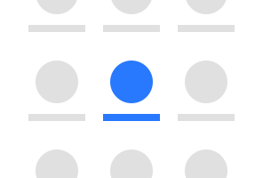
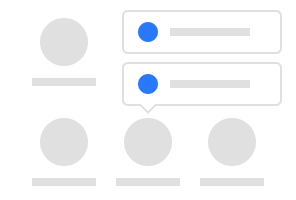
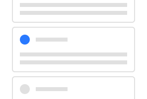
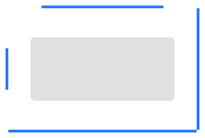
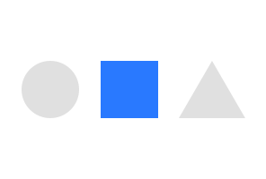
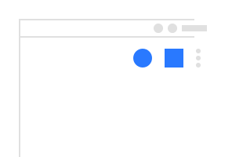

Android Asset Studio
A collection of tools to easily generate assets such as launcher icons for your Android app.

Launcher icon generator
Generate launcher and store listing icons for your app.

App shortcut icon generator
Generate app launcher shortcut icons (Android 7.1+).

Notification icon generator
Generate notification icons for your app. These show up in the system status bar and notification shade.

Simple nine-patch generator
Generate nine-patch (.9.png) assets for your app, normally used for custom UI widgets.

Generic icon generator
Generate square icons for custom use within your app.

Action bar/tab icon generator
Generate icons for the app bar or tab bars.